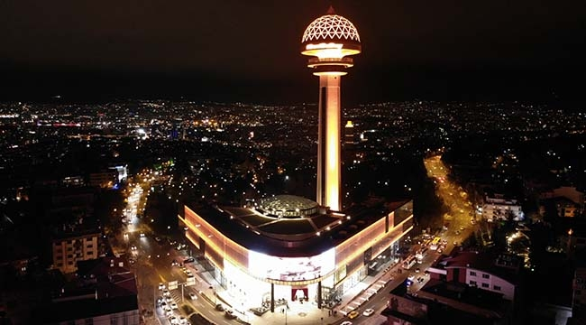

ATAKULE
TARİHİ
13 Ekim 1989 terihinde Ankara`nın başkent oluşunun 66. yıl dönimine denk gelen günde 8. Cumhurbaşkanı Sayın Turgut ÖZAL tarafından açılışı yapılan Türkiye`nin ve Ankara`nın ilk Alışveriş Merkezi başkentte hizmet vermeye başlamıştır.
Modern Alışveriş Merkezinin plan ve projesi Mimar Sayın Ragıp Buluç tarafından hazırlandı. Kutlutaş İnşaat Firması ile tamamı Türk Mühendis ve işçileri tarfından inşaa edilen çarşı temelleri 1987 yılında dönemin Başbakanı Sayın Turgut Özal tarafından atıldı. İsmi düzenlenen bi yarışma ile Ankara halkı tarafından verilmiştir. Mimari yapısı ve konumu itibariyle de önemli bir turizm merkezidir.
KONUMU
Cumhurbaşkanlığı ve Başbakanlık Konutları yakınında, Botanik Parkı üstünde, şehir manzarasına tamamen hakim olan Alışveriş Merkezi`nin çevresinde, çeşitli Büyükelçilik binaları ile konut ve işyeri amaçlı 4-6 katlı yapılar mevcuttur. Atakule Alışveriş Merkezi`ne Anıtsal nitelik kazandıran 125 metrelik Kule, döner platformu ile bir benzerinin bulunmayışı sebebiyle yapıyı kentin simgesi haline getirmektedir.
ÖZELLİKLERİ
Alışveriş Merkezi ve Kule olmak üzere iki ana bölümden oluşan tesiste;
-Alışveriş Merkezi; Atrium çarşı niteliğinde inşa edilen ve tamamı alışveriş merkezi olarak faaliyet gösteren, sosyal ünite olarak nikah ve kokteyl salonu bulunan 5 katlı bölümdür. -Kule bölümü; 125 m yükseklikte inşa edilmiş betonarme taşıyıcı sistemli yapı özelliğinde, çıkış ve inişte şehir manzarasına hakim iki adet asansörle 87 m yükseklikte seyir terasına ulaşılmaktadır. Bu bölümün altında Cafe-Bar katı, üzerinde ise döner platformlu lokanta katı yer almaktadır. En üstte ise, kubbe altında kokteyl salonu bulunmaktadır.
Alışveriş Merkezi ve Kule de mevcut altyapı ve tesisata ilave olarak, yangın ihbar,gaz alarm, yangın söndürme, güvenlik kamera sistemi,klima , müzik ve dahili yayın, uydu anten ve yayın, panoramik asansörler merdivenler, parotoner ile havuz ve su gösterileri gibi tesisler yapıya güvenlik ve konfor artırıcı özellik kazandırmaktadır. Ayrıca ülkemizde ilk defa gerçekleştirilen döner platformlu lokanta ve seyir teraslı kule, teknolojik özelliği ile tesise anıtsal ve simgesel nitelik kazandırmaktadır. Binaya ait fiziksel veriler aşağıda belirtilmiştir.
İnşaat Tarzı : Betonarme Karkas
İnşaat Nizamı : Ayrık
Kat Adedi : Alışveriş Merkezi; 8 kat (5 bodrum+ zemin+ 2 Normal)
Kule Adedi : H 125 m. 4. kat (81-95 m arası)
Toplam İnşaat Alanı : 28.530 m2
Ticari Alan : 17.297 m2
Yapım Yılı : 1986-1987
Park Yeri : 2 katlı kapalı otopark